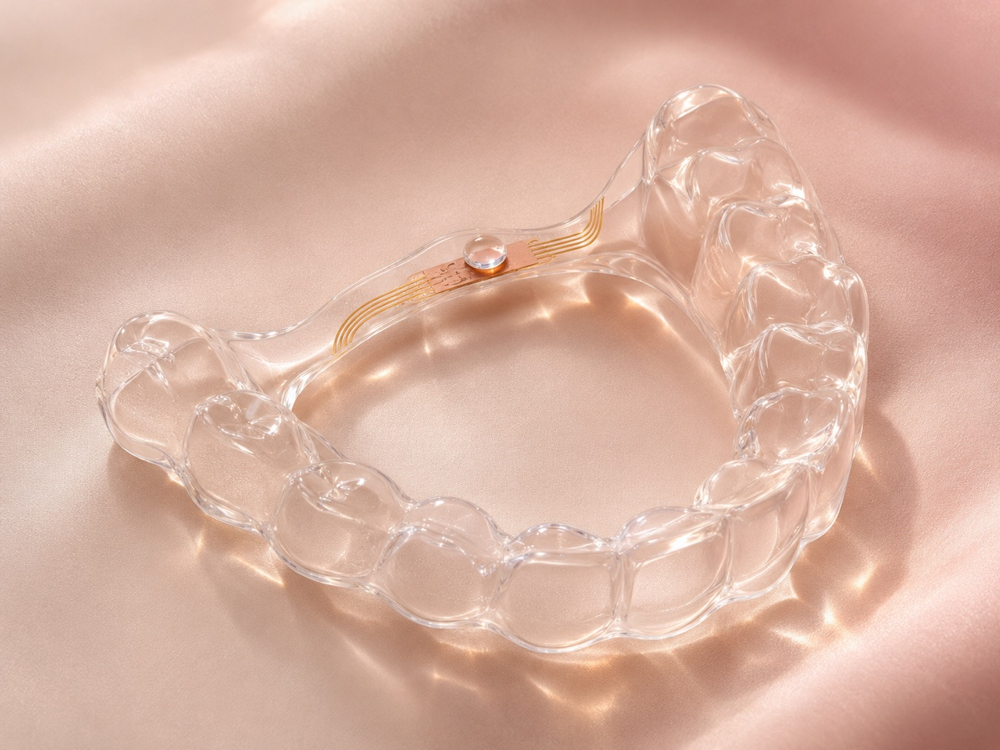

健康与营养Health & Nutrition
用舌下唾液， A way to watch glucose changes 风格化葡萄糖Stylized glucose 多一种观察血糖变化的方式 using saliva from under the tongue
Glyvia 是一款无须扎针的血糖监测产品。把一枚小小的传感器放在舌下，读取日常分泌的唾液，再结合针对个人和当下状态的模型，在手机或小程序里显示血糖变化的趋势。它适合关心自己或家人血糖变化的人。使用的人和购买的人，可以不是同一位。
它能做什么，不能做什么。What it can do — and what it cannot.
检测到唾液里的葡萄糖，并不等于用唾液估计血糖。Glyvia 提供的是健康管理用的辅助趋势信息。它不能替代指尖采血或持续葡萄糖监测（CGM），也不用于诊断或调整胰岛素。
02 — 为什么需要它
为什么需要它
许多人需要反复了解血糖的变化。每次扎手指都有负担，持续监测仪也不是人人都能长期使用。大家希望多一种更轻松、可以日常佩戴的观察方式。
据国际糖尿病联盟估计，2024 年全球约有 5.89 亿名 20–79 岁成人患有糖尿病。
03 — 它适合谁
它适合谁
Glyvia 给想多看一眼血糖变化的人，也给可能一起查看的家人或照料者。使用的人和买下来的人，可以不是同一位。
指尖采血和持续葡萄糖监测，仍然是人们日常使用的方法。Glyvia 不能替代它们，而是在旁边多提供一种观察变化的方式。
传感器放在舌下，读取的是日常分泌的唾液。不会特意催你多分泌口水，因为那样得到的样本，反而不如平时自然分泌的更贴近真实情况。它戴着更舒服，适合日常使用，并在手机里给你看针对个人的趋势。
04 — 如何工作
从舌下到手机，这样工作。
- 01
放在舌下
把传感器轻轻放在舌下，读取日常分泌的唾液。
- 02
先测唾液里的葡萄糖
传感器检测的是唾液中的葡萄糖，不是血液本身。
- 03
再结合针对你的模型
根据个人情况，以及餐前、餐后等不同状态，估计血糖及其变化。
- 04
在手机里看趋势
在手机或小程序中查看变化方向，作为健康管理的参考。

05 — 接下来
接下来
我们正在把设备做得更好用，并继续完善针对个人的趋势模型。欢迎关注后续进展。
06 — 团队
团队
团队介绍即将发布。
07 — 视频
创新视频
创新视频即将上线。
08 — 联系我们
欢迎联系我们。
若你想了解 Glyvia，或有购买方面的问题，欢迎来信。请不要在留言里填写个人健康信息，例如血糖读数、诊断或用药情况。此表单不会发送或保存留言。